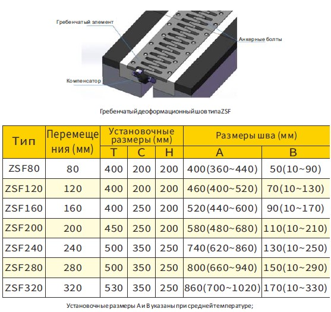
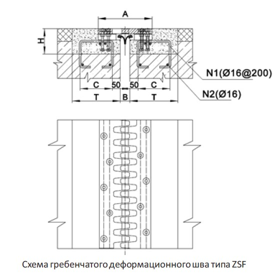

ДЕФОРМАЦИОННЫЙ ШОВ ТИПА ZSF
- Уплотнительный элемент обладает отличными водонепроницаемыми свойствами;
- Симметричная и компактная конструкция, удобная для установки и обслуживания;
- Эффективно предотвращает попадание внутрь дорожного мусора и снижает шум при движении.

